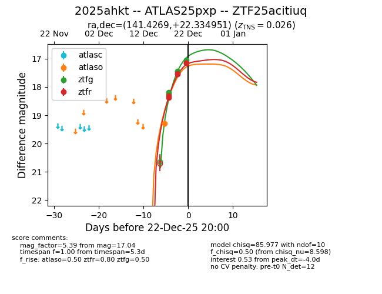
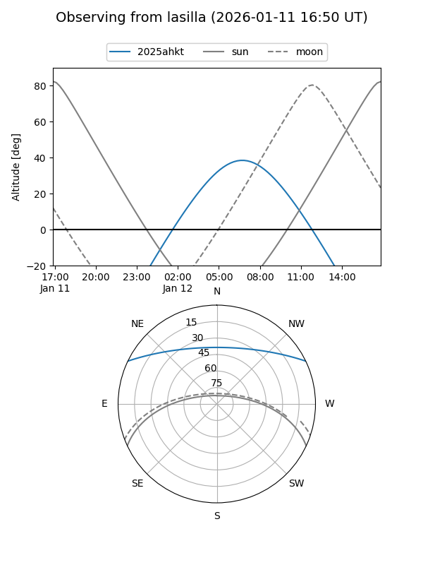
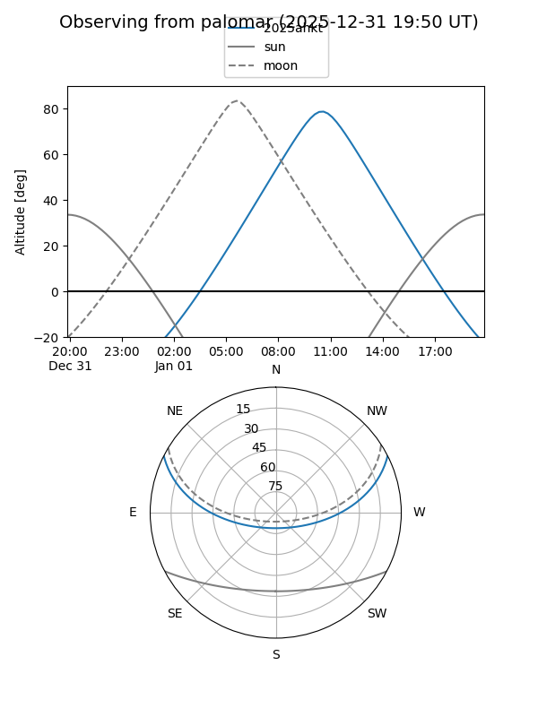
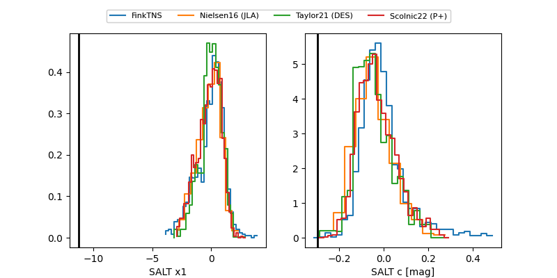

2025ahkt
Target 2025ahkt at 2026-01-12 09:10
Aliases and brokers:
FINK: link
Lasair: link
ALeRCE: link
TNS: link
YSE: link
alt names
ZTF25acitiuq (ztf,fink_ztf)
2025ahkt (tns,yse)
ATLAS25pxp (atlas)
PS25mon (panstarrs)
Coordinates:
equatorial (ra, dec) = 141.4269,+22.33495
equatorial (HMS+DMS) = 09:25:42.45,+22:20:05.82
galactic (l, b) = (206.9906,+43.35423)
Flags:
confirmed ia
Photometry:
last atlasc=16.17, atlaso=16.31, ztfg=16.19, ztfr=16.39
2 atlasc, 5 atlaso, 11 ztfg, 8 ztfr detections
Lightcurve

Visibility


Additional plots
